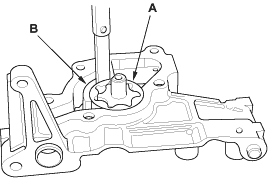
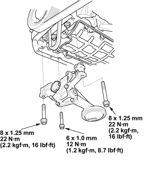
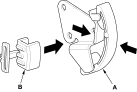

- Check the housing-to-outer rotor radial clearance between the outer rotor (A) and pump housing (B). If the housing-to-outer rotor radial clearance exceeds the service limit, replace the oil pump.
Housing-to-Outer Rotor Radial Clearance
Standard (New):
0.15 - 0.21 mm
(0.006 - 0.008 in.)
Service Limit:
0.23 mm (0.009 in.)

- Inspect both rotors and the pump housing for scoring or other damage. Replace parts if necessary.
- Install the oil pump cover.

Oil Pump Installation
- Install the oil pump.

- Squeeze the new oil pump chain tensioner (A), then install the set clip (B) on it as shown.
NOTE: The set clip is supplied with the oil pump chain tensioner.
